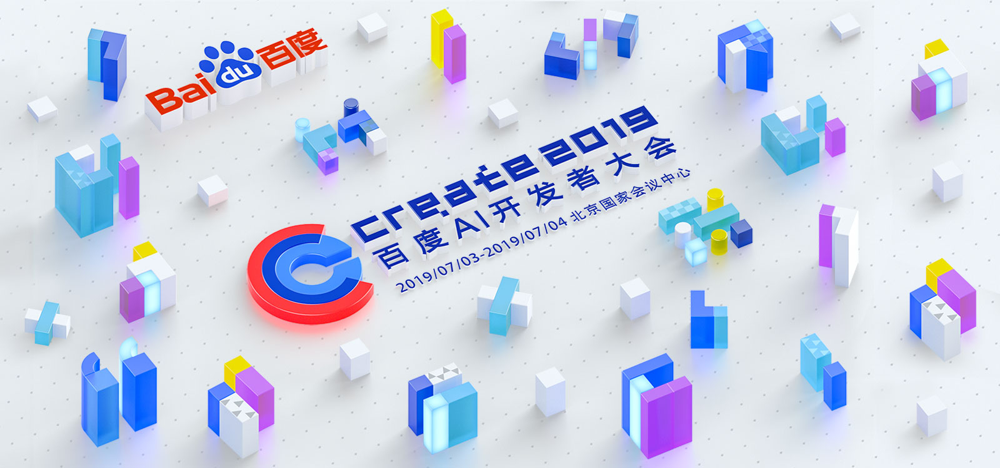

DuerOS介绍
解决方案
开放平台
新闻动态
关于我们
中
| En
新闻动态
新闻动态
展会动态
产品公告
小度智能屏 国内3C零售业增长新变量
伴随5G和IoT的发展，未来几年，数码零售 人将会走进硬件大爆炸的时代，对于这些零售企业，是一 个千载难逢的机遇，提前入场！提前准备！
来源:DuerOS 2020-01-06 14:09:55
智能屏为何更能留住用户？景鲲：突破边界持续创造新价值
解读小度智能屏“微笑曲线”：从用户出发，突破智能音箱边界
来源:DuerOS 2020-01-06 14:09:55
波士顿咨询解读中国AI平台优势：小度助手推动产业智能化
波士顿咨询：小度助推产业智能化 为中国实体经济高质量发展注入新动能
来源:DuerOS 2020-01-06 14:09:55
开启2020新篇章！四台跨年晚会携国民智能音箱小度震撼来袭
小度智能音箱横扫各大跨年晚会 2020由“小度智能屏”为你开启
来源:DuerOS 2020-01-06 14:09:55
小度智能屏 国内3C零售业增长新变量
伴随5G和IoT的发展，未来几年，数码零售 人将会走进硬件大爆炸的时代，对于这些零售企业，是一 个千载难逢的机遇，提前入场！提前准备！
来源:DuerOS 2020-01-06 14:09:55
小度在家1S故宫版羡煞国外网友：传统文化与AI融合太棒了！
小度与故宫文化跨界联名海外获赞：中国的小度，也是世界的小度
来源:DuerOS 2020-01-06 14:09:55
小度智能屏 国内3C零售业增长新变量
伴随5G和IoT的发展，未来几年，数码零售 人将会走进硬件大爆炸的时代，对于这些零售企业，是一 个千载难逢的机遇，提前入场！提前准备！
来源:DuerOS 2020-01-06 14:09:55
横扫跨年晚会的小度已走进千家万户
在这个从2019迈向2020的特殊节点，小度 还来到湖南卫视跨年演唱会的现场；在央视跨年盛典上 亮相；作为联合冠名品牌，登上了爱奇艺跨年晚会的舞 台……为歌舞升平增添了一抹科幻的色彩。
来源:DuerOS 2020-01-06 14:09:55

闲鱼年会奖品大赏：小度智能音箱成企业年会礼品标配
今年年会奖品啥最火？闲鱼告诉我们：手机该给小度让位了
来源:DuerOS 2020-01-06 14:09:55
《亲爱的客栈3》打烊了，小度为千万家庭带来智能生活
在这个从2019迈向2020的特殊节点，小 度还来到湖南卫视跨年演唱会的现场；在央视跨年盛典 上亮相；作为联合冠名品牌，登上了爱奇艺跨年晚会的 舞台……为歌舞升平增添了一抹科幻的色彩。
来源:DuerOS 2020-01-06 14:09:55
上一页
1
2
3
4
5
..
17
下一页
末页